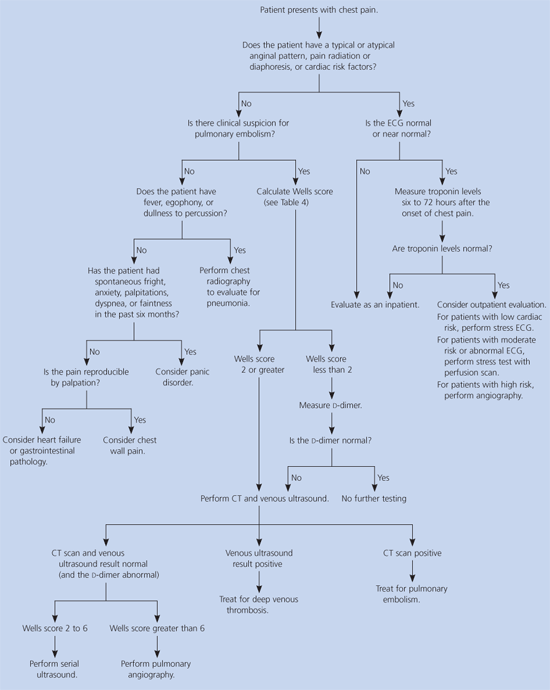
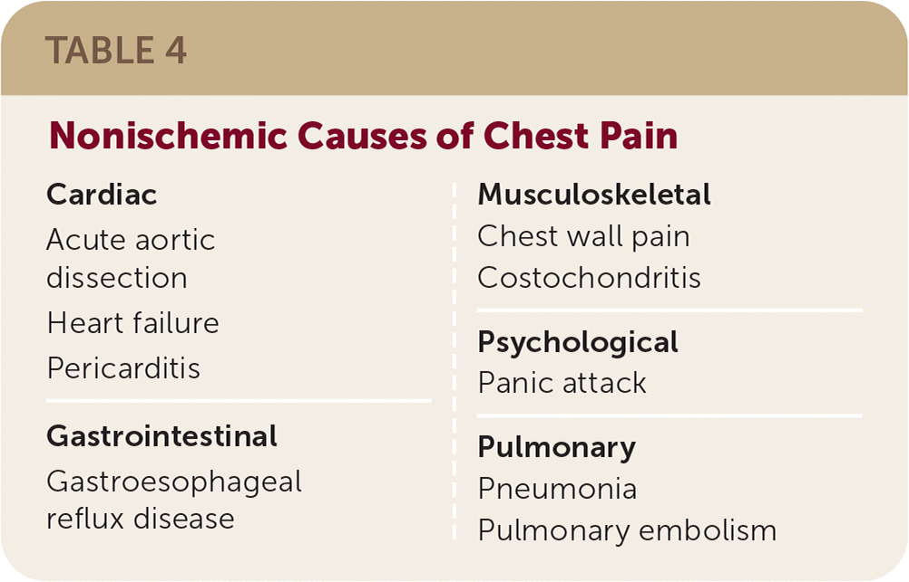

Do not order an exercise stress test in a patient with a baseline abnormal EKG.
Clinical suspicion for thoracic dissection warrants immediate referral to the emergency department.
LBBB = QRS > 120 ms; "W" in V1; "M" in V6; no Q wave in I, aVL, V5, or V6;
Pathologic Q Waves: > 40 ms (1mm) wide; > 2 mm deep; > 25% of depth of QRS; seen in V1-3
T wave inversion in lead III is normal, but any new T-wave flip of direction is bad.
Wells' Criteria for Pulmonary Embolism
INTERCHEST Calculator


This page was last updated on
Disclaimer: Information presented in the template should be re-checked and should not be used alone to guide patient care or substitute for clinical judgement.
Note: Please copy text into the EMR prior to adding any HIPPA information. Though no information is being saved/transmitted on this site, typing private information into a web page is generally bad practice.